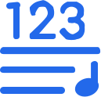

⌂
首页
原谱
轨道
播放
文字
谱
语言
搜索
00:00 / 00:00
上一首
诗歌
下一首
速度
100%
恢复
转调
−
0
+
恢复
文字
谱词字号
−
30
+
谱词距
−
2.0x
+
和弦字号
−
16
+
恢复
语言
简体
繁体
搜索
大本
小本
搜索
谱
五线谱

简谱
歌词
切换后实时生效，点面板外空白处收起。
95
--
CP0
C_1 V_FINAL_1
轨道
全选
全不选